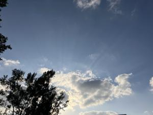
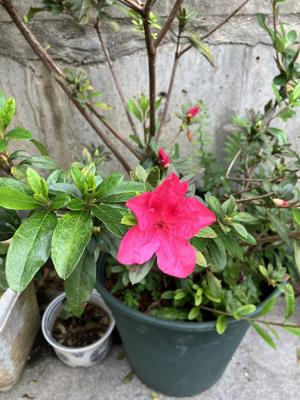

うるがいの話 ある日
最新: 用心棒【うるがいの話 ある日】とは 一日だけのプログです
『うるがいの話』の最新一日だけのプログで、通信料が少なく経済的だ。カニの画像をクリックすると全ての日付が載る『うるがいの話』サイトを表示します
|
|
【うるがいの話】 うるがい(ｳﾙｶﾞｲ urugai)とは、『もずくがに』の名前でとても大きくなります。 |
|---|---|
|
|
【カミマヤーの話】 猫のことを方言でマヤーといいます。カミマヤー（kamimayaa）とは、神の猫のことです。 |
|
【たながぁの音楽】 たながぁ（ﾀﾅｶﾞｰ tanagaa）とは手長えびのことで、何種類かあり大きいのは車 エビぐらいになります。 |

|
【ぶながぁの話】 ぶながぁ(ﾌﾞﾅｶﾞｰ bunagaa)とは、赤い髪の毛、赤い身体、そして身長は１ｍ２０ｃｍ ぐらい、川の蟹を食べているの目撃された。場所は沖縄県国頭郡大宜味村のと ある村僕の隣近所に住んでいる爺さんから、聞いた話です。 |
|
|
【ギーマの話】 ギーマ(giima)とは、山原の里山に咲くスズランに似た、 花を付けます。実は食べられます、 気が付くと口の周りが紫になっています。 |
2024年02月11日 (日）用心棒
14:57

１９７８年も、今日のようないい天気だった。黒沢明の用心棒に出てるジャ
イアント馬場みたいな人誰ですか？→羅生門綱五郎(らしょうもんつなごろ
う)という元大相撲の力士、元プロレスラーの役者さんです（身長２０３ｃ
ｍ、体重１２５ｋｇ）。ホー、さすがに巨人である。恥ずかしながら、黒澤
明監督の映画『用心棒』を初めて見た。面白い！、なんでこれまで見ていな
かったのか、不思議である。

新聞の論壇にタツさん（東京都大田区、個人事業主、７６歳）の記事が載っ
ていた。写真は恐らく１０年以上も前だと思うが、お元気でした。オカさん
とほぼ同じ世代である。中途採用、途中退職、コンサル、いまは事業主、ウ
ーン、頑張っている。
１４時４９分 ビットコインの総資産 ￥２０、７６８（↑３１６）